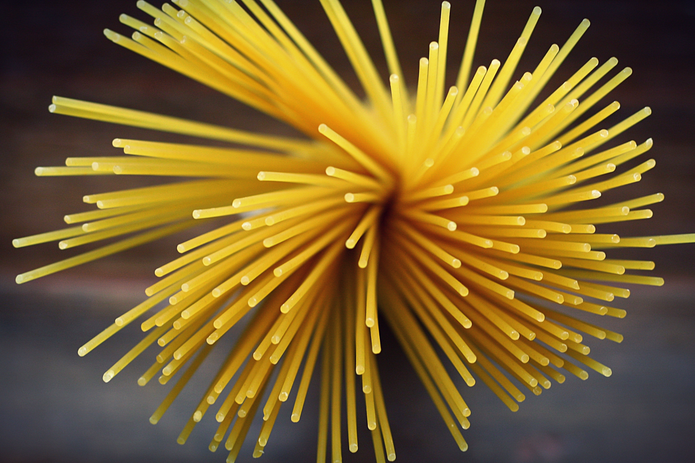
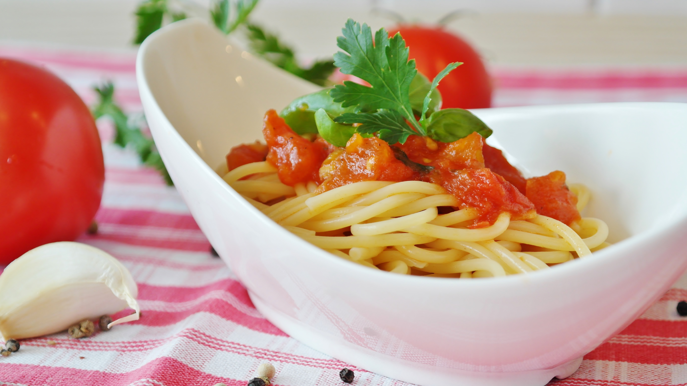

1. Prepare all the ingredients
- spaghetti (100 gr. per person)
- tomatoes
- basil
- salt
- black pepper
- olive oil
You will also need...
- a pot
- a large pan
2. Bring the water in the pot to boil
When the water is about to boil, add a punch of rock salt.
3. Prepare the tomatoes sauce
- Chop the tomatoes into small pieces.
- Heat a pan putting in it one or two spoons of olive oil and a clove of garlic.
- After two minutes, remove the garlic and add the tomatoes, salt and pepper.
- Cook slowly for fifteen minutes.
4. Cook pasta
- when the water boils, add a punch of rock salt and putt the spaghetti in it.
- Cook slowly without lid following the directions on the package, usually betwen 8 and 10 minutes.
Do you want to cook the perfect pasta?
The perfect pasta is always "al dente", which means a little bit undercooked. That is beacause you will spend the last two minutes cooking pasta in the pan with its sauce.
5. Complete your dish
- When the pasta is "al dente", drain the water with a strainer.
- Add the pasta to the tomatoes sauce, turn on the heat and mix for two minutes.
- Turn off the heat and put the pasta in a soup dish.
- Drizzle olive oil, add one leave of basil end enjoy your pasta!